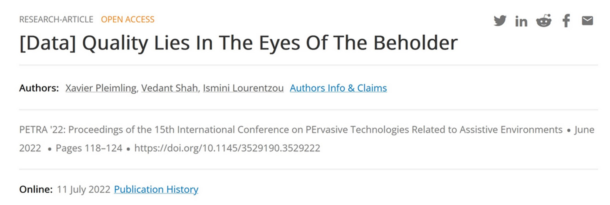
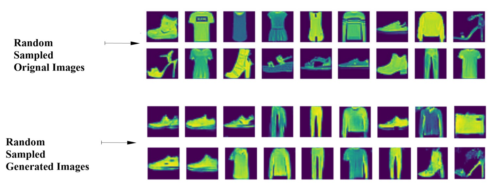

Hello (Namaste), my name is Vedant Shah. Allow me to introduce myself to you :)
About Me
Hi, I'm Vedant Shah
I'm a budding machine learning engineer with an ardent interest in deep learning. I'm an accelerated MS student at Virginia Tech in the senior year of my Bachelors in Computer Science.
Currently, I work with my research advisor Dr. Ismini Lourentzou in the PLAN lab @ VT. My research interests lie in computer vision, in the areas of object detection; object recognition; pose estimation,
dataset quality, and dataset generation.
I'll be completing my undergrad in May 2023 and continue onto my MS thesis thereafter. You can learn more about me through my publications and research work
as well as my selected personal projects.
When I'm off research, I like going for a swim, working out, hiking, cycling, playing badminton, and making new friends.
The four most important values to me are accountability, commitment, compassion, and integrity.
Research
Publication:

[Data] Quality Lies In The Eyes Of The Beholder
Xavier Plemming, Vedant Shah, Ismini Lourentzou
Keywords: Datasets, Data Quality, Data Utility, Incomplete Data, User Survey, Data Analytics.
ACM PETRA 2022 Association for Computing Machinery Pervasive Technologies Related to Assistive Environments |
Abstract: As large-scale machine learning models become more prevalent
in assistive and pervasive technologies, the research community
has started examining limitations and challenges that arise from
training data, e.g., fairness, bias, and interpretability issues. To
this end, data-centric approaches are increasingly prevailing over
time, showing that high-quality data is a critical component in
many applications. Several studies explore methods to define and
improve data quality, however, no uniform definition exists. In
this work, we present an empirical analysis of the multifaceted
problem of evaluating data quality. Our work aims at identifying
data quality challenges that are most commonly observed by data
users and practitioners. Inspired by the need for generally applicable
methods, we select a representative set of quality indicators, that
covers a broad spectrum of issues, and investigate the utility of these
indicators on a broad range of datasets through inter-annotator
agreement analysis. Our work provides insights and presents open
challenges in designing improved data life cycles.
Abstract: A mechanical insect wing station has been constructed to understand the underlying fluid dynamic principles which guide the circulation of hemolymph in an insect wing.
The frequency at which the wing flaps depends on the voltage fed to the motor and on the inertial properties of the wing. Using machine learning (ML) to perform regression,
estimating the values of dependent variables based on independent variables, is a well-studied task both in academia and industry. While many generic regression models are available,
we wanted to be able to calibrate the apparatus for new wings using only sparse data. A custom regression model was built using Tensorflow with the adaptive moment estimation algorithm
(Adam) as the optimization function and Huber as the loss function to learn the relationship between the voltage and frequency of specific insect wing models fabricated with stereolithography
resin printers. Datasets were prepared by manually tracking the flapping wing in video data in order to find the flapping frequency in Hertz and the voltage from the power source in Volts at
that frequency. The mean absolute percentage error is used to measure the accuracy of the prediction. The model predicts voltage based on input frequency with a 94% success rate. Automating
this manual task with an ML model improves the accuracy of values. This is essential to improve data accuracy in the insect wing hemodynamics experiments which has a broader application to
downstream tasks such as developing systems for drug delivery and other applications in human health.
Abstract: Over 500 million people are affected by diabetes worldwide. For insulin-dependent patients, treatments include bulky and inconvenient battery-powered insulin pumps and painful syringe injections.
The InsulPatch is an alternative, smaller-scale insulin delivery pump currently under development. It provides an inexpensive way to administer insulin easily, painlessly, and without a power source,
making insulin delivery more convenient for Type 1 diabetics. Inspired by the insect respiratory system, the InsulPatch features a multilayer microfluidic pump system. It uses the wearer’s radial pulse to
pump insulin transdermally via a microneedle array. Photolithography and stereolithography (SLA) 3D printing microfabrication techniques were used to create device design molds. The molds were then used
to create the InsulPatch device layers by pouring liquid polydimethylsiloxane (PDMS) into the molds and baking to cure the PDMS. The devices contain three layers: a top layer consisting of actuation channels,
a thin middle membrane, and a bottom layer containing the flow channels. Flow rate data was collected at different actuation pressures and frequencies for different flow and actuation channel geometric design
parameters. The devices were actuated using pressurized air signals representing different blood pressures and heart rates. The flow rate data was collected and analyzed using Graphpad Prism. This data was then
used to create a sequential regression machine learning model with 80% prediction accuracy, enabling the solution of the inverse problem of producing device designs for specific patients. After successful clinical
trials, the InsulPatch will allow for accessible, painless, and convenient insulin delivery.
Brief : A gesture control mechanism which makes use of a camera to capture the finger movements of a hand and alter the sound of the host system. This version
is designed for desktop use.
Code Read Me
Virtual Mouse Control
Brief : A gesture control mechanism which makes use of a camera to capture the finger movements of a hand and move the mouse pointer on the desktop.
Further, this model also supports single and double clicks with certain finger movements. This version is designed for desktop use.
Code Read Me
Virtual Keyboard
Brief : A gesture control mechanism which makes use of a camera to capture the finger movements of a hand and type the letters as selected on the desktop screen.
This version is designed for desktop use and is able to write text on popular apps such as notepad++, Word, etc.
Code Read Me
Virtual Painter
Brief : A gesture control mechanism which makes use of a camera to capture the finger movements of a hand and paint on the desktop screen
within the reference box. Currently it supports four different colors and the eraser option.
This version is designed for desktop use.
Code Read Me
GAN & AutoEncoders
Variational AutoEncoder for Image Generation
Img Title: Latent Space Distribution of the Variational AutoEncoder (VAE)
Brief : I've created this VAE from scratch using Tensorflow and Keras functional API for the task of dataset generation. This model
is trained on the fashion mnist dataset. The figure above shows the latent space distribution of the model
and the one below shows the results produced by my VAE.
Code Read Me
Variational AutoEncoder for Sound Generation
Original Sound
Generated Sound
Brief : I've created this VAE from scratch using Tensorflow and Keras functional API for the task of sound generation. This model
is trained on the free spoken digits dataset. The embedded audio above
represents the orignal audio used for training the model and the audio generated by the model based on sampled mel spectograms. Code Read Me
Generative Adversarial Network for Image Generation (On-Going)
Img Title: Results produced by the GAN
Brief : Currently, I'm working on applying my knowledge of GANs by building a simple GAN, from scratch, for the purpose of dataset generation. I'm using
Tensorflow and Keras Sequential API to build this GAN. The image above indicates the results I've been able to obtain so far. This GAN is being trained on
the fashion mnist dataset. I was able to handle the mode collapse issue with
better training and currently I'm working on improvising the quality of the generated images.
Code Read Me